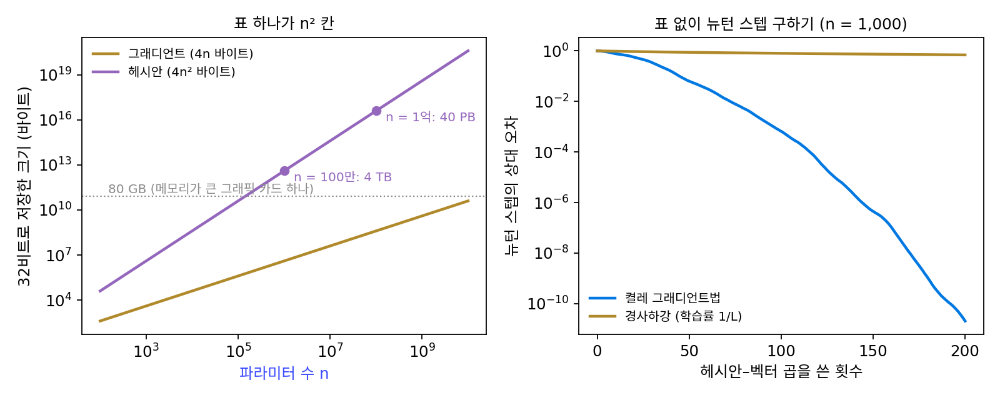
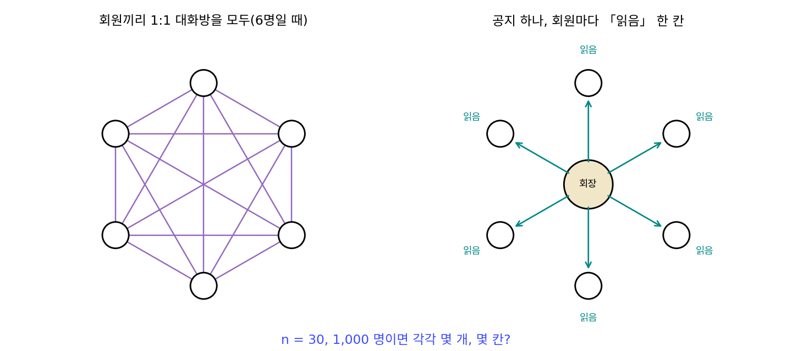
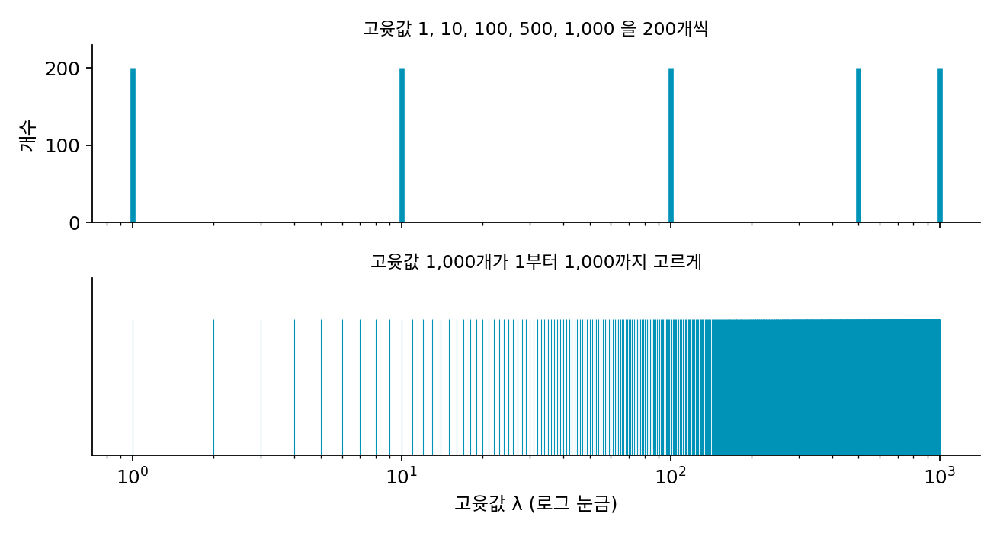
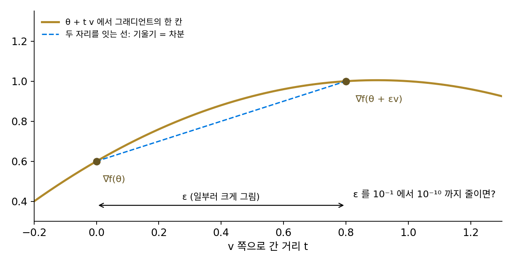

헤시안–벡터 곱: 표를 만들지 않고 휨을 쓰기
뉴턴 스텝은 길쭉한 골짜기를 한 스텝에 건넜고, 단위나 축이 바뀌어도 같은 자리로 갔다. 안장점에 끌리는 성질은 고윳값의 절댓값으로 나누거나 대각 칸에 양수를 더해 피할 수 있었다. 그런데도 큰 신경망을 뉴턴법으로 학습시키지 않는 것은 헤시안의 크기라는 걸림돌이 남아서다. 파라미터가 n개면 헤시안은 n × n 표라서 파라미터가 백만 개면 칸이 1조 개인데, 그 표 없이 휨을 쓸 길은 없을까?
역사: 그래디언트 한 번 값으로 헤시안을 곱하다
1994년 바락 펄머터(Barak Pearlmutter)는 『뉴럴 컴퓨테이션』에 「헤시안을 빠르고 정확하게 곱하기」를 실었다. 많은 2차 방법이 실제로 필요로 하는 것은 헤시안 표 전체가 아니라, 헤시안에 벡터 하나를 곱한 결과라는 데서 출발했다. 그때까지는 그래디언트를 조금 민 두 자리에서 재서 빼는 차분으로 근사했는데, 이 차분 근사는 수치가 불안정했다. 펄머터는 「방향 v로 조금 움직일 때 얼마나 바뀌는가」를 재는 연산자를 그래디언트 계산 전체에 한 번 더 적용하면, 헤시안–벡터 곱을 반올림 오차 외에는 정확하게, 그래디언트 한 번 계산하는 것과 비슷한 비용으로 얻는다는 것을 보였다. 역전파, 순환 신경망의 역전파, 그리고 확률적 방법인 볼츠만 기계와 가중치 섭동에 이 방법을 적용한 식도 함께 적었다.
이 도구를 큰 신경망 학습에 쓴 사람이 토론토 대학의 제임스 마튼스(James Martens)다. 그는 2010년 국제 기계학습 학회(ICML)에 낸 「헤시안 없는 최적화로 하는 깊은 학습」에서, 곡률 행렬과 벡터의 곱만으로 뉴턴 스텝을 근사해 깊은 오토인코더를 학습시켰다. 곡률 행렬로는 음수 휨이 생기지 않는 가우스–뉴턴 행렬을 썼다. 그때까지 깊은 오토인코더는 층마다 미리 학습시키는 단계를 거쳐야 학습된다고 여겨졌는데, 마튼스는 그 단계 없이 힌턴과 살라쿠트디노프(2006)의 결과보다 나은 결과를 얻었다고 보고했다. 그는 깊은 신경망이 학습되기 어려운 것이 길쭉한 골짜기 같은 「병적인 곡률」 탓이기도 하다면서, 2차 방법이 그것을 다룰 수 있다고 보았다.

헤시안–벡터 곱이면 torch.autograd.grad를 두 번 부르면 되잖아요. 이게 논문 한 편이 될 일이에요?

1994년에는 신경망 연구자가 흔히 쓰는 자동 미분 라이브러리가 없었어요. 파이토치는 2016년에 나왔고요. 펄머터가 역전파, 순환 신경망, 볼츠만 기계에 그 연산자를 적용한 식을 하나하나 손으로 적어야 했던 것도 그래서예요. 그 전에는 그래디언트 두 개를 빼는 차분으로 구했다고 했죠. 그 방법은 어디서 탈이 났을까요?

음, ε를 작게 하면 두 그래디언트가 거의 같아지니까… 빼는 순간 앞자리가 다 지워지고 끝자리 반올림만 남겠네요. 그렇다고 ε를 키우면 미분이 아니게 되고요.

그래요. 그리고 곱을 정확하게 얻는 길이 생긴 뒤에도, 깊은 오토인코더는 층마다 미리 학습시켜야 학습된다고 여겨졌어요. 마튼스가 그 단계 없이 학습시킨 게 2010년이에요.

미리 학습 없이 됐다는 건, 막혀 있던 원인 가운데 하나가 길쭉한 골짜기 같은 곡률이었다는 거네요.

표 없이 Hv만 있으면 방향 하나의 휨은 vᵀHv로 바로 나오는데, 뉴턴 스텝처럼 H⁻¹을 곱해야 하는 일은 곱만으로 어떻게 해요?
표 대신 곱 하나
먼저 헤시안이 얼마나 큰지 숫자로 보자. 32비트 실수 하나는 4바이트다.
| 파라미터 수 n | 헤시안 칸 수 n² | 32비트로 저장 | 뉴턴 스텝 한 번(연립방정식 풀기) 곱셈 수(대략) n³/3 |
|---|---|---|---|
| 1천 | 100만 | 4 MB | 3.3 × 10⁸ |
| 100만 | 10¹² | 4 TB | 3.3 × 10¹⁷ |
| 1억 | 10¹⁶ | 40 PB | 3.3 × 10²³ |
| 70억 | 4.9 × 10¹⁹ | 196 EB | 1.1 × 10²⁹ |
파라미터 1억 개의 그래디언트는 400 MB라 그래픽 카드 하나에 들어가지만, 헤시안은 40 PB(페타바이트, 10¹⁵바이트)이고 대칭이라 반만 저장해도 20 PB라서, 만들 수도 풀 수도 없다.
그런데 휨을 쓰는 일 가운데 많은 것은 표 전체가 아니라 표에 벡터 하나를 곱한 Hv만 있으면 된다. 방향 v의 휨은 vᵀ(Hv)이고, 뒤에서 보듯 뉴턴 스텝도 Hv를 여러 번 구해 근사할 수 있다. Hv는 「θ를 v 쪽으로 조금 움직일 때 그래디언트가 바뀌는 비율(v 방향의 방향 미분)」이다. 헤시안의 정의, 곧 「θⱼ를 움직일 때 그래디언트가 바뀌는 비율」을 한 방향으로 묶은 것이다. 그래서 그래디언트와 v의 내적 ∇fᵀv라는 수 하나를 θ로 한 번 더 미분하면 Hv가 나온다.
자동 미분 도구에서는 오른쪽 식을 그대로 쓴다. 파이토치라면 그래디언트를 계산할 때 create_graph=True로 계산 과정을 남겨 두고, (g @ v)를 다시 torch.autograd.grad로 미분하면 된다. 역전파를 두 번 하는 셈이라 그래디언트 한 번의 몇 배 정도 비용이 들고, 헤시안 표는 어디에도 만들어지지 않는다. 이렇게 헤시안 표를 만들지 않고 헤시안에 벡터를 곱한 결과만 구하는 계산을 헤시안–벡터 곱 (표 없이 한 방향의 휨 변화를 구하기 / Hessian-vector product)이라 한다.
파라미터 625개짜리 작은 신경망(입력 20, 은닉층 둘은 각 16, 출력 1)으로 확인해 보자. 이 정도면 헤시안 표 625 × 625를 전부 만들어 비교할 수 있다. 두 번 미분으로 구한 Hv와 표를 만들어 곱한 결과의 상대 차이는 5 × 10⁻¹⁶로, 64비트 실수의 반올림 오차 수준이다. 시간은 그래디언트 한 번의 1.95배였다(이 컴퓨터에서 잰 값). 이 신경망의 무작위 출발점에서 헤시안은 고윳값 625개 가운데 311개가 음수였다. 출발점의 손실 지형은 그릇이 아니라 안장에 가까웠다.
이제 뉴턴 스텝 Δθ = −H⁻¹∇f를 표 없이 구해 보자. 연립방정식 Hs = ∇f를 푸는 켤레 그래디언트법(conjugate gradient)은 H를 직접 들여다보지 않고, 스텝마다 H와 벡터의 곱을 한 번씩만 쓴다. 파라미터 1,000개, 고윳값이 1부터 1,000까지 고르게 퍼진(조건수 1,000) 2차 함수에서 해 보면, 곱을 20번 쓴 뒤의 상대 오차는 0.56, 50번에 0.063, 100번에 0.00066, 200번에 2 × 10⁻¹¹이다. 같은 200번의 곱을 학습률 1/L의 경사하강에 쓰면 상대 오차는 아직 0.69다. 곱 몇백 번으로 파라미터 천 개짜리 뉴턴 스텝을 얻은 것이고, 마튼스의 「헤시안 없는 최적화」도 이 방법으로 스텝마다 뉴턴 스텝을 근사했다.

ML에서: 휨을 직접 계산하지 않고 흉내 내기
헤시안–벡터 곱은 지금도 큰 신경망의 휨을 재는 기본 도구다. Hv를 되풀이해 곱하면 가장 크게 휜 방향의 휨을 표 없이 잴 수 있어서, 학습 도중 손실 지형이 얼마나 가파르게 휘었는지를 추적하는 연구들이 이것을 쓴다. 다만 학습 스텝마다 켤레 그래디언트법을 몇십 번씩 돌리는 헤시안 없는 최적화는 큰 언어 모델 학습의 기본값이 되지 못했다. 학습 스텝 하나에 헤시안–벡터 곱을 수십 번, 곧 그래디언트 계산의 수십 배를 쓰기 때문이다. 그래서 실제로 널리 쓰이는 옵티마이저들은 다른 길을 골랐다. 지난 스텝들의 방향을 기억하거나, 그래디언트 제곱의 평균으로 방향마다의 휨을 추정하거나, 층마다 작은 행렬 몇 개로 헤시안을 대신하는 식으로, 휨을 직접 계산하지 않고 그 효과를 흉내 낸다. 모멘텀, Adam, K-FAC, Shampoo가 그런 방법이다.
문제 13. 단톡방의 1:1 대화방
동아리 단체 대화방에 n명이 있다. (가) 회원끼리 1:1 대화방을 모두 만들면 몇 개인가? n = 30, 1,000일 때 계산하라. (나) 회장이 공지 하나를 올리고 회원마다 「읽음」 표시 하나씩만 모은다면 몇 칸이면 되는가? (다) 두 방식을 파라미터 n개의 헤시안과 헤시안–벡터 곱에 빗대 보라.

30명이면 30 × 29 / 2 = 435개, 1,000명이면 499,500개예요. 사람이 33배 남짓 늘었는데 대화방은 1,148배요.
공지 하나에 「읽음」을 모으는 건 회원 수만큼, 30칸이나 1,000칸이야.
그럼 대화방 표를 다 만들어야 알 수 있는 일과, 공지 하나로 알 수 있는 일은 각각 뭘까요?
누구랑 누가 얼마나 친한지 하나하나 알려면 대화방 표가 다 있어야 하고, 공지 하나가 회원마다 얼마나 퍼졌는지는 한 줄이면 돼요. 헤시안 표가 「모든 짝 사이의 관계」고, 헤시안–벡터 곱은 「방향 하나를 던졌을 때 파라미터마다 돌아오는 반응 한 줄」이네요.

표는 n²에 비례해서 커지고 한 줄은 n에 비례해. 그리고 공지를 여러 번, 다른 내용으로 보내면 표의 여러 면을 볼 수 있어. 켤레 그래디언트법이 Hv를 방향을 바꿔 가며 여러 번 구하는 게 그거야. 행렬을 몰라도 행렬과 벡터의 곱만 알면 그 행렬로 할 수 있는 일이 많다는 걸 선형대수 시간에 배웠는데, 이런 데 쓰이네요.

조별 과제에서 조원 전부랑 1:1로 일정 맞추다 지쳤는데, 투표 하나 올렸으면 됐던 거네요.
문제 14. 고윳값이 다섯 개뿐이면
파라미터 1,000개인 2차 함수의 헤시안이 고윳값 1, 10, 100, 500, 1,000을 각각 200개씩 가진다(조건수 1,000). 켤레 그래디언트법으로 뉴턴 스텝을 구한다. (가) 헤시안–벡터 곱을 몇 번 쓰면 뉴턴 스텝이 정확해지겠는가? 먼저 짐작하고 계산 결과(곱 1번 뒤 상대 오차 0.996, 2번 뒤 0.982, 5번 뒤 9.5 × 10⁻¹³)와 비교하라. (나) 고윳값이 1부터 1,000까지 고르게 퍼진 경우(곱 200번에 2 × 10⁻¹¹)와 무엇이 다른가? (다) 뉴턴 스텝 구하기를 학습률 1/L의 경사하강으로 200번 하면 상대 오차는 0.81이다. 두 방법의 차이는 어디서 오는가?

파라미터가 1,000개니까 켤레 그래디언트법도 1,000번은 곱해야 정확해지겠죠. 그런데 5번 만에 10⁻¹³이에요. 반올림 오차 수준이요. 이상한데요?
고윳값이 다섯 개뿐이라는 게 무슨 뜻일까요? 고유 방향이 1,000개라도 휨은 몇 가지죠?
휨이 다섯 가지뿐이에요. 같은 휨을 가진 방향 200개는 한 덩어리로 움직이고요.
켤레 그래디언트법은 k번째 스텝에 ∇f, H∇f, …, Hᵏ⁻¹∇f로 만든 공간에서 가장 좋은 답을 찾잖아. 그건 H의 (k − 1)차 다항식을 ∇f에 곱한 것들이고. 그런데 그게 휨 다섯 가지랑 어떻게 이어지는지는 모르겠어.
고유 방향마다 보면 H⁻¹은 무엇을 곱하죠?

1/λ요. 그럼 고윳값 다섯 곳에서 1/λ와 같은 값을 내는 다항식이면 되겠네요. 점 다섯 개를 지나는 다항식은 4차면 되니까…
다섯 번째 스텝에서 H⁻¹∇f를 정확히 만들 수 있어요.
고윳값이 1,000개 다 다르면요?
1,000개 점 모두에서 1/λ를 맞추려면 999차까지 가야 정확해요. 그래도 실제로는 200번에 10⁻¹¹이었으니까, 정확히 맞추지 않고 가깝게만 맞추면 훨씬 적게 드나 봐요.

그럼 (다)의 경사하강은 왜 200번에 0.81밖에 안 돼? 경사하강도 곱을 200번 했잖아.

경사하강은 스텝마다 (1 − λ/L)를 곱하는 고정된 1차식을 되풀이할 뿐이라 휨 1인 방향은 200번 뒤에도 0.82배밖에 안 줄어. 켤레 그래디언트법은 스텝마다 다항식을 새로 고르고. 스텝 수는 고윳값이 몇 가지냐와 얼마나 퍼졌느냐로 정해지지, 파라미터 수로 정해지는 게 아니야. 수치해석에서 배운 다항식 보간이 이렇게 쓰이네.

그래서 신경망 헤시안처럼 큰 고윳값 몇 개와 0 근처의 고윳값 무더기로 나뉜 경우엔 헤시안 없는 최적화가 생각보다 적은 곱으로 쓸 만한 뉴턴 스텝을 얻을 수 있겠네요. 시험 범위가 1,000쪽이어도 유형이 다섯 가지면 다섯 유형만 익히면 되는 거랑 같아요.
문제 15. 그래디언트 차분의 ε는 얼마가 좋은가
파라미터 625개짜리 신경망에서 헤시안–벡터 곱을 그래디언트 차분 (∇f(θ + εv) − ∇f(θ))/ε로 근사한다. 두 번 미분으로 구한 정확한 값과의 상대 오차가 64비트 실수와 32비트 실수로 계산할 때 아래와 같았다.
ε 10⁻¹ 10⁻³ 10⁻⁵ 10⁻⁶ 10⁻⁷ 10⁻⁸ 10⁻¹⁰ 64비트 0.033 0.00033 0.0000033 3.3 × 10⁻⁷ 3.4 × 10⁻⁸ 8.9 × 10⁻⁸ 8.4 × 10⁻⁶ 32비트 0.033 0.00066 0.053 0.48 2.67 3.29 1.00 (가) ε를 줄일 때 오차는 왜 처음에는 줄다가 다시 커지는가? (나) 두 정밀도에서 가장 좋은 ε는 대략 얼마이고, 왜 다른가? (다) 펄머터의 방법이 차분보다 나은 점은?

ε는 작을수록 미분의 정의에 가까우니까 10⁻¹⁰이 제일 정확해야 하는데… 64비트에서 10⁻¹⁰이 10⁻⁷보다 250배 나쁘네요. 32비트에서는 10⁻⁶만 돼도 오차가 48%예요.
그래디언트 두 개를 빼는 계산에서, ε가 아주 작으면 두 그래디언트는 얼마나 비슷하죠?

거의 같아요. 거의 같은 두 수를 빼면 앞자리는 다 지워지고 끝자리의 반올림 오차만 남아요. 그걸 아주 작은 ε로 나누니까 반올림 오차가 커지는 거네요. 32비트는 유효숫자가 7자리 남짓이라 금방 그렇게 되고요.
ε가 클 때는 반대야. 그래디언트는 직선이 아니니까 ε만큼 가는 동안 휨이 바뀌어서, 오차가 ε에 비례해. 64비트 줄에서 ε를 10배 줄일 때마다 오차가 정확히 10배씩 줄잖아. 두 오차가 같아지는 곳이 가장 좋아. 64비트는 10⁻⁷ 근처, 32비트는 10⁻³ 근처야.

두 곳이 얼마나 떨어져 있는지 볼까요? 실수 한 개의 반올림 오차는 64비트가 10⁻¹⁶쯤, 32비트가 10⁻⁷쯤이에요.
휨 때문에 생기는 오차가 ε에, 반올림 때문에 생기는 오차가 (반올림 오차)/ε에 비례하니까… 두 오차의 합이 가장 작은 ε는 반올림 오차의 제곱근쯤이에요.
그럼 64비트는 10⁻⁸, 32비트는 10⁻³·⁵쯤이네. 표랑 대략 맞아.
(다)로 가 볼까요? 가장 좋은 ε에서도 오차가 얼마나 남았죠?

64비트는 10⁻⁸, 32비트는 10⁻³대에 머물러요. 펄머터의 방법은 빼기를 하지 않으니까 ε를 고를 일이 없고, 오차가 반올림 수준이에요. 수치해석 시간에 배운 「절단 오차와 반올림 오차의 균형」이 여기 나오네요.
학습은 보통 32비트나 그보다 낮은 정밀도로 하니까, 차분으로 헤시안–벡터 곱을 구하면 거의 쓸 수 없는 값이 나오는 거네요. create_graph=True 한 줄을 쓰는 이유를 알겠어요.